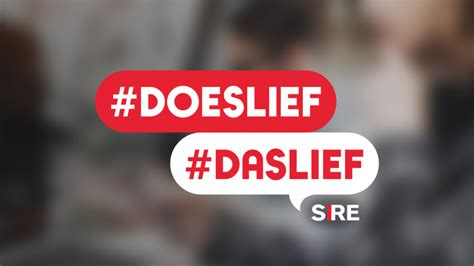
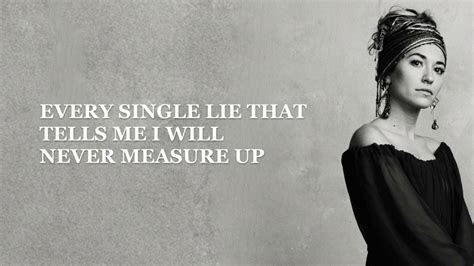

Ik heb jullie een kaartje gegeven met een compliment erop geschreven. Wat doet het met je om de compliment te ontvangen (te horen/lezen)?
Ben je vandaag lief geweest voor jezelf? Hoe heb je het gedaan?
We gaan samen naar een liedje luisteren. Een lied van Maan, 'Ze huilt maar ze lacht'.
Ze zit hier alleen in de trein
En ze duikt in haar jas
Ze kijkt uit het raam
En ze vraagt zich af
Hoe zou het voelen jezelf te zijn
Want soms doet het pijn
maar ze huilt maar ze lacht
ze huilt maar ze lacht
Ze loopt door een wereld niet aardig voelt
Onbedoeld zegt ze dingen die iedereen altjid zegt
Want nooit gaat het slecht
Altijd oke en ze lult met ze mee
En ze lacht
Ze huilt maar ze lacht
En nu, ze laat het los
En nu, ze laat het los
Ze voelt zich alleen als ze loopt in de stad
En ze kijkt in het raam ziet een ander d'r staan
En ze weet wie het is
maar ze wil haar niet zijn
En ze gaat door met de schijn
En ze lacht
Ze huilt maar ze lacht
Want als ze morgen besluit niet te schuilen
Haar betere ik voor haar ware gezicht te ruilen
Zullen de vrienden die zij wil vertrouwen
Nog steeds van haar houden
Als ze huilt
Als ze huilt en niet lacht
En nu, ze laat het los
En nu, ze laat het los
Ze laat het los
Ze laat het los
Ooh
Ze laat het los
Ik zit hier alleen in de trein
En ik duik in mijn jas
En kijk uit het raam
En ik vraag me af
Hoe zou het voelen mezelf te zijn
Want soms doet het pijn als ik huil
Maar ik lach
Wat vinden jullie van deze tekst? Is het herkenbaar? Herken je het gevoel dat je je geregeld vrolijker voordoet dan hoe je je voelt?
We gaan het thema van het zoeken naar identiteit onderzoeken door te kiezen tussen telkens twee stellingen. Daar lees ik dan een Bijbeltekst bij en gaan we het erover hebben. Je moet of bij de bank gaan staan, of bij de kast.
Matteüs 10:29-31 en Jesaja 40:15
We zijn dus waardevol! Tegelijk zijn wij schepsel en beperkt. Wat denk je nu over de stelling? Wil je van plaats wisselen?
Wat denk je nu over de stellingen? Je mag wisselen van plaats.
Wat vind je van deze stellingen? Worstel je soms met hoe je eruit ziet? Met wie je bent?
Filippenzen 2:3 en Matteüs 22:37-39
Het lijkt er wel op. Toch passen beide uitspraken bij hoe God naar ons kijkt. De ene persoon is niet belangrijker dan een ander. Dus maakt God er geen onderscheid in. En moeten wij geen onderscheid maken. Tegelijk is het belangrijk om van jezelf te houden, anders weet je niet (goed) hoe je van iemand anders kunt houden.

We gaan luisteren naar het lied van Lauren Daigle, 'You say'.
I keep fighting voices in my mind that say I'm not enough
Every single lie that tells me I will never measure up
Am I more than just the sum of every high and every low
Remind me once again just who I am because I need to know
Ooh-oh
You say I am loved when I can't feel a thing
You say I am strong when I think I am weak
And you say I am held when I am falling short
And when I don't belong, oh You say I am Yours
And I believe (I)
Oh, I believe (I)
What You say of me (I)
I believe
The only thing that matters now is everything You think of me
In You I find my worth, in You I find my identity
Ooh-oh
You say I am loved when I can't feel a thing
You say I am strong when I think I am weak
And you say I am held when I am falling short
When I don't belong, oh You say I am Yours
And I believe (I)
Oh, I believe (I)
What You say of me (I)
Oh, I believe
Taking all I have, and now I'm laying it at Your feet
You have every failure, God, You have every victory
Ooh-oh
You say I am loved when I can't feel a thing
You say I am strong when I think I am weak
You say I am held when I am falling short
When I don't belong, oh You say I am Yours
And I believe (I)
Oh, I believe (I)
What You say of me (I)
I believe
Oh, I believe (I)
Yes, I believe (I)
What You say of me (I)
I believe
Wat vind je van dit lied? Ben je het ermee eens dat het alleen maar uitmaakt van God van je vindt? Of is het nog maar lastig om toe te passen?
We gaan even een proefje doen. Drie van jullie krijgen een opdracht. Wie wil een opdracht doen? Anders wijs ik gewoon mensen aan.
Zeg heel onzeker: 'Ik ben de koning/koningin'.
Zeg heel arrogant: 'Ik ben de koning/koningin'.
Zeg met veel gezag: 'Ik ben de koning/koningin'.
Hoe vond je elke koning overkomen? In wie had je vertrouwen, en waarom?
In je gedrag laat je zien hoe je over jezelf denkt.
Ben je het ermee eens?